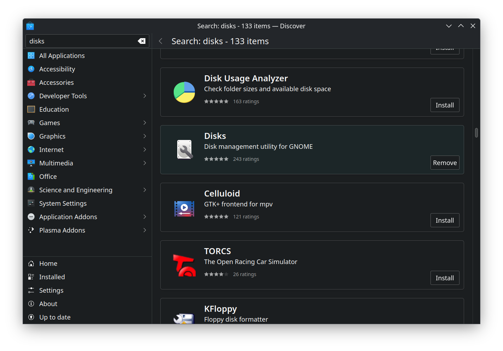
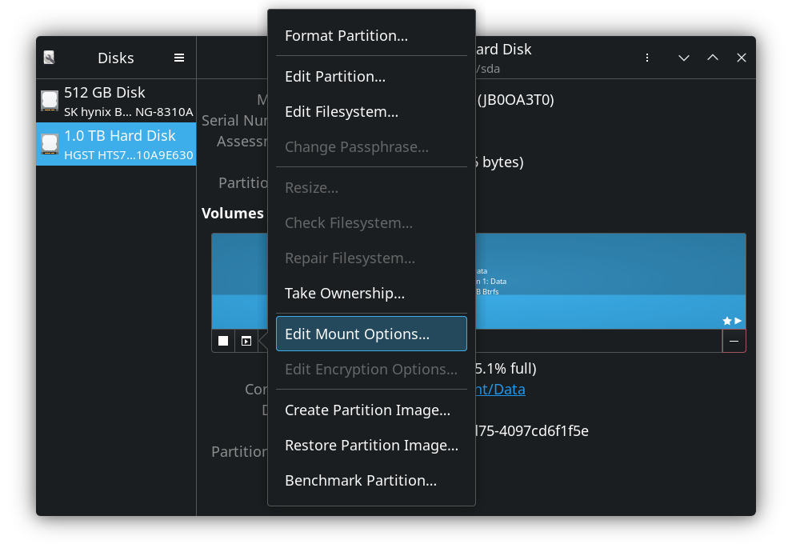
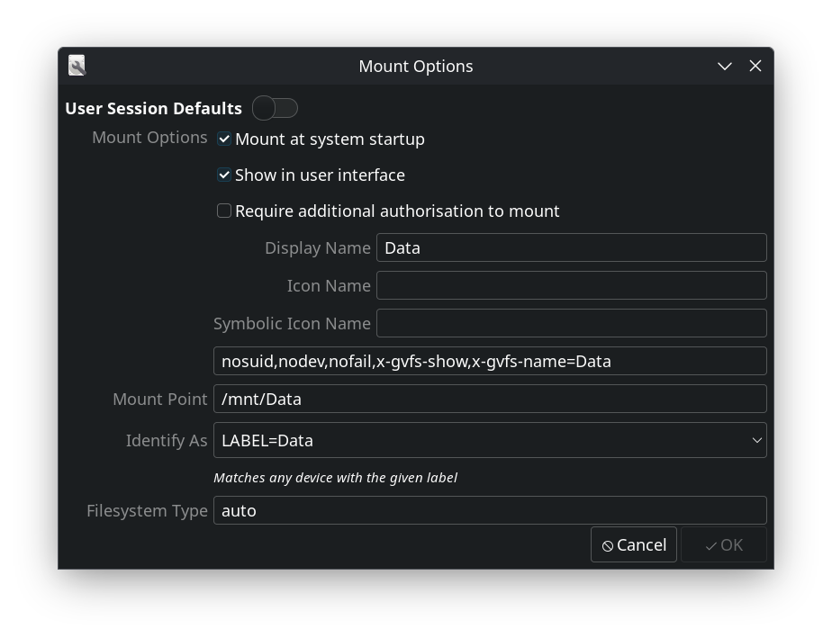

Checklist
- Download Balena Etcher
- Download the ISO you want from Here
- Do a checksum, if you dont know then look below.
- Backup any files you want to keep, it will only install to your choosen drive so your harddrive would keep all its data but long term you will want to format it as linux reading that file system will run into issues.
- Backup your passwords, my advice is take this oppertunity to swap to Bitwarden as its free and opensource and runs nicely on linux and android.
- Backup your saves, these can be hard to find, some will be in your documents others will be in appdata folders, remember to check .local, .roaming and locallow. If in doubt search the net for the location.
- Back up all your minecraft stuff, server addresses and any map mod data
- You will need to disable secure boot via your bios, you can do this when in there to tell it to boot your usb drive first. (you will need to chage your boot order back to its default once the OS is installed).
Checksum
The CertUtil is a pre-installed Windows utility, that can be used to generate hash checksums:
CertUtil -hashfile pathToFileToCheck SHA256
So your should look something like this:
CertUtil -hashfile C:\Users\kayla\Desktop\Nobara-37-KDE-2023-04-02.iso SHA256
Wayland or X11/Plasma
Simple answer is if you have an Nvidia graphics card then as it stands you should use X11 as Wayland is not fully supported with nvidia.
I personally have my startup skip logging in and to do this you can access system settings>startup and shutdown>login screen(SDDM)>behavior.
Changing this to auto loggin as your user and with session plasma(x11) will auto log you in usisng that.
Otherwise make sure x11/plasma is selected on the login screen. You will want to be and have x11 before continuing with your configerations
Setting your NVIDIA Graphics card to default
Follow the guide here
If you find that /usr/share/X11/xorg.conf.d/nvidia.conf doesnt exist then use this file /etc/X11/xorg.conf.d/10-nvidia.conf and do not rename it. you will need to copy and paste it to /usr/share/X11/xorg.conf.d/ to do so you will need to open the file as an adminastrator(Right click in the file and open as admin)
Mounting your drive permanently
You may wish to format your drive before doing this, that is done using the KDE Partition Manager. There are two ways to permanently mount your drive, we will go over the easy way using a program called "Disks", you can find this in discover.

Open Disks and select edit mount options as seen below.

Set your mount options should look similar to the image below.(Obvs you can call it what you want).
